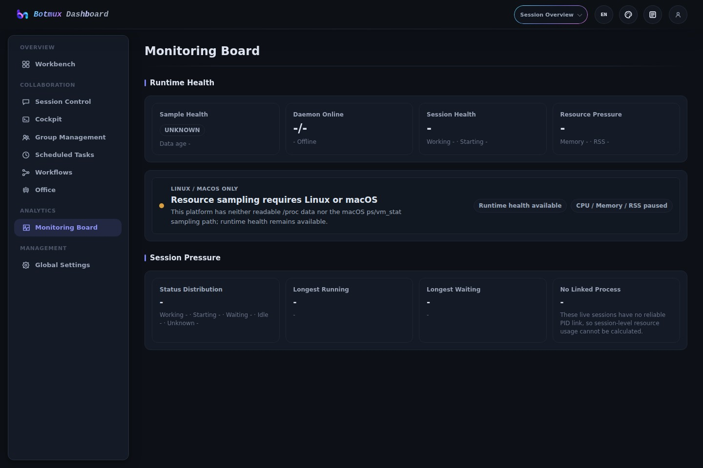
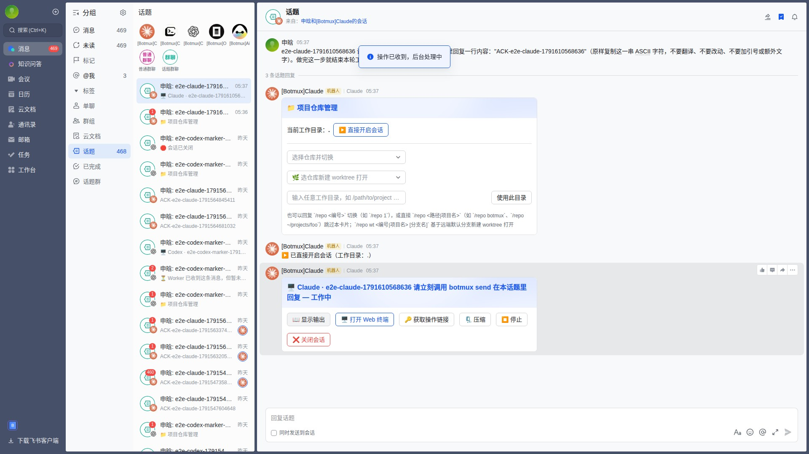
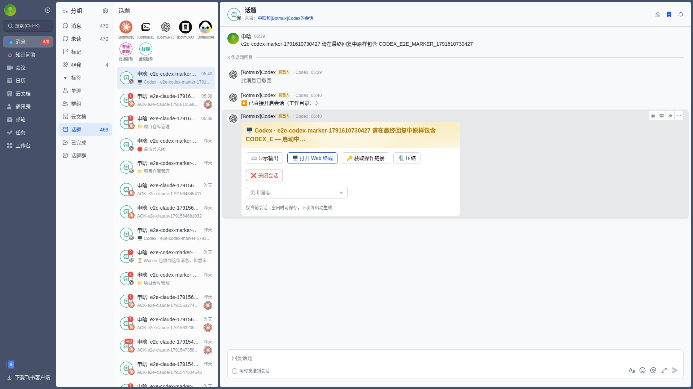
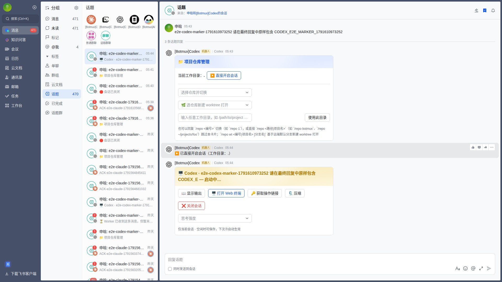

Botmux × Midscene
3/18 cases passed · 1 failed · 0 skipped · 14 not run
| Case | Project | Status | Duration | Node screenshot | Replay | |
|---|---|---|---|---|---|---|
| ✅ | Navigate the core read-only Dashboard pages | dashboard-smoke | success | 40.8 s |  | |
| ❌ | Claude basic bot flow | feishu-browser | failed | 161.8 s |  | |
| ✅ | Codex basic bot flow | feishu-browser | success | 118.2 s |  | |
| ✅ | Codex prompt submission | feishu-browser | success | 117.9 s |  | |
| ⏸️ | Aiden basic bot flow | feishu-browser | not-run | — | Not available | Not available |
| ⏸️ | CoCo basic bot flow | feishu-browser | not-run | — | Not available | Not available |
| ⏸️ | OpenCode basic bot flow | feishu-browser | not-run | — | Not available | Not available |
| ⏸️ | Bot reply smoke test | feishu-browser | not-run | — | Not available | Not available |
| ⏸️ | Aiden and CoCo collaboration | feishu-browser | not-run | — | Not available | Not available |
| ⏸️ | Streaming card lifecycle | feishu-browser | not-run | — | Not available | Not available |
| ⏸️ | Consecutive message queue | feishu-browser | not-run | — | Not available | Not available |
| ⏸️ | Group message without a mention | feishu-browser | not-run | — | Not available | Not available |
| ⏸️ | Group message with one bot mention | feishu-browser | not-run | — | Not available | Not available |
| ⏸️ | Group chat topic reply | feishu-browser | not-run | — | Not available | Not available |
| ⏸️ | Private chat topic reply | feishu-browser | not-run | — | Not available | Not available |
| ⏸️ | Mixed image and text card | feishu-browser | not-run | — | Not available | Not available |
| ⏸️ | Scheduled task remains in its source thread | feishu-browser | not-run | — | Not available | Not available |
| ⏸️ | Web terminal opens from the streaming card | feishu-browser | not-run | — | Not available | Not available |